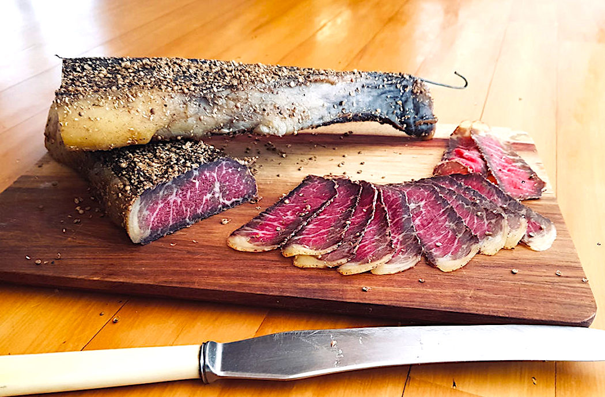
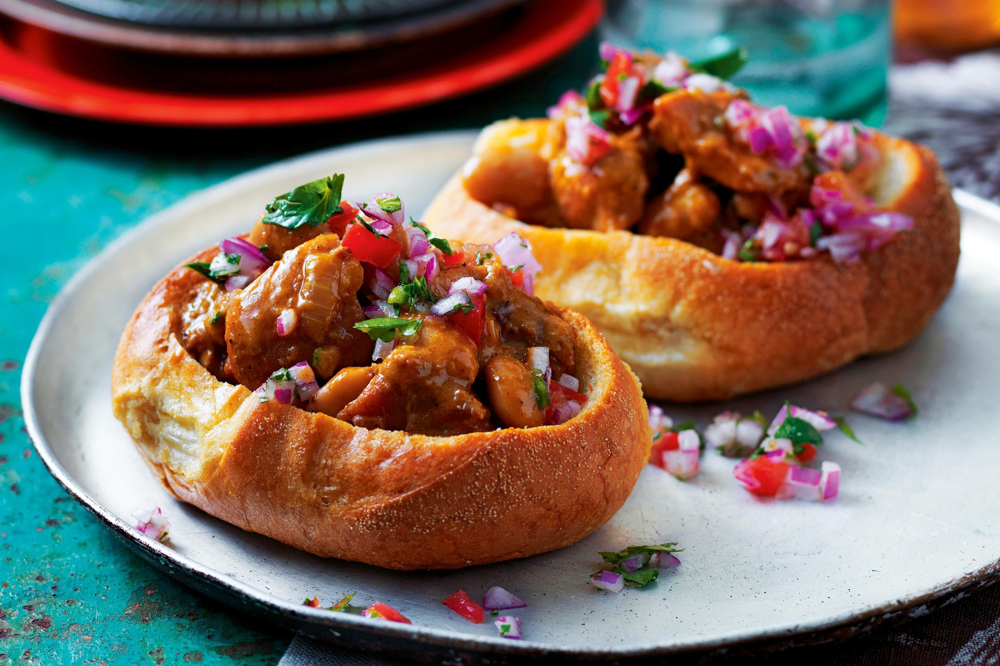
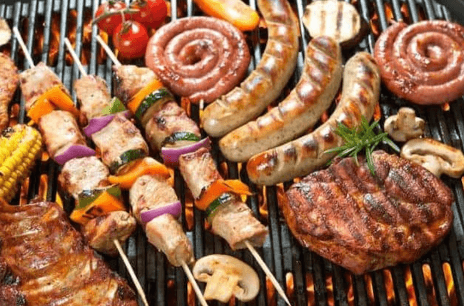
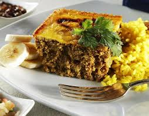

Local Cuisine
South African cuisine is a flavorful mix of indigenous, Dutch, Malay, and Indian influences. Braai, a traditional barbecue, brings people together over grilled meats. Bobotie, a spiced meat dish baked with an egg topping, is a local favorite.
Other iconic foods include bunny chow, a hollowed-out bread filled with curry, and biltong, a dried cured meat snack. Exploring local cuisine provides visitors with a true taste of South Africa’s diverse culinary heritage.